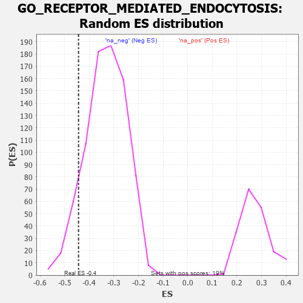

| | | Dataset | 7d |
| Phenotype | NoPhenotypeAvailable |
| Upregulated in class | na_neg |
| GeneSet | GO_RECEPTOR_MEDIATED_ENDOCYTOSIS |
| Enrichment Score (ES) | -0.44379824 |
| Normalized Enrichment Score (NES) | -1.3312802 |
| Nominal p-value | 0.09293681 |
| FDR q-value | 0.43111733 |
| FWER p-Value | 1.0 |
Table: GSEA Results Summary
 Fig 1: Enrichment plot: GO_RECEPTOR_MEDIATED_ENDOCYTOSIS
Fig 1: Enrichment plot: GO_RECEPTOR_MEDIATED_ENDOCYTOSIS
Profile of the Running ES Score & Positions of GeneSet Members on the Rank Ordered List
| PROBE | GENE SYMBOL | GENE_TITLE | RANK IN GENE LIST | RANK METRIC SCORE | RUNNING ES | CORE ENRICHMENT | | 1 | DLL1 | | | 337 | 0.760 | -0.0178 | No |
| 2 | LRP1 | | | 470 | 0.648 | -0.0133 | No |
| 3 | MX1 | | | 578 | 0.604 | -0.0071 | No |
| 4 | LRP1B | | | 668 | 0.570 | 0.0003 | No |
| 5 | HYOU1 | | | 1692 | 0.358 | -0.1173 | No |
| 6 | PI4KB | | | 1747 | 0.346 | -0.1128 | No |
| 7 | FMR1 | | | 1816 | 0.334 | -0.1105 | No |
| 8 | AP2S1 | | | 1846 | 0.329 | -0.1034 | No |
| 9 | SYK | | | 2186 | 0.278 | -0.1371 | No |
| 10 | REPS1 | | | 2255 | 0.267 | -0.1370 | No |
| 11 | WASF1 | | | 2303 | 0.259 | -0.1345 | No |
| 12 | NUMB | | | 2519 | 0.224 | -0.1543 | No |
| 13 | MTMR2 | | | 3126 | 0.133 | -0.2265 | No |
| 14 | AP1G1 | | | 3210 | 0.121 | -0.2331 | No |
| 15 | FCHO2 | | | 3238 | 0.115 | -0.2327 | No |
| 16 | SNX17 | | | 3272 | 0.110 | -0.2333 | No |
| 17 | AAK1 | | | 3400 | 0.089 | -0.2465 | No |
| 18 | AP2A2 | | | 3433 | 0.085 | -0.2477 | No |
| 19 | CBL | | | 3621 | 0.056 | -0.2695 | No |
| 20 | SYT11 | | | 3732 | 0.036 | -0.2822 | No |
| 21 | HTR1B | | | 3745 | 0.035 | -0.2826 | No |
| 22 | AP2B1 | | | 4185 | -0.039 | -0.3368 | No |
| 23 | GAK | | | 4249 | -0.050 | -0.3431 | No |
| 24 | ADRB2 | | | 4352 | -0.068 | -0.3538 | No |
| 25 | HIP1 | | | 4485 | -0.092 | -0.3674 | No |
| 26 | RAB21 | | | 4620 | -0.122 | -0.3804 | No |
| 27 | ARF6 | | | 4704 | -0.140 | -0.3863 | No |
| 28 | CLU | | | 4889 | -0.174 | -0.4039 | No |
| 29 | DRD2 | | | 5088 | -0.221 | -0.4217 | No |
| 30 | ITSN1 | | | 5094 | -0.222 | -0.4150 | No |
| 31 | PICK1 | | | 5265 | -0.263 | -0.4279 | No |
| 32 | MAGI2 | | | 5295 | -0.269 | -0.4228 | No |
| 33 | CD9 | | | 5319 | -0.277 | -0.4166 | No |
| 34 | DLG4 | | | 5388 | -0.293 | -0.4157 | No |
| 35 | FOLR2 | | | 5563 | -0.336 | -0.4267 | No |
| 36 | CD63 | | | 5680 | -0.370 | -0.4292 | No |
| 37 | MX2 | | | 5745 | -0.390 | -0.4246 | No |
| 38 | VLDLR | | | 5898 | -0.434 | -0.4296 | Yes |
| 39 | CAP1 | | | 5935 | -0.447 | -0.4195 | Yes |
| 40 | RAC1 | | | 6036 | -0.484 | -0.4164 | Yes |
| 41 | PPT1 | | | 6038 | -0.485 | -0.4007 | Yes |
| 42 | CALR | | | 6077 | -0.499 | -0.3892 | Yes |
| 43 | DBNL | | | 6084 | -0.501 | -0.3736 | Yes |
| 44 | INSR | | | 6204 | -0.538 | -0.3710 | Yes |
| 45 | FLOT1 | | | 6276 | -0.564 | -0.3616 | Yes |
| 46 | ABCA2 | | | 6433 | -0.634 | -0.3606 | Yes |
| 47 | WDR54 | | | 6491 | -0.658 | -0.3463 | Yes |
| 48 | CLN3 | | | 6580 | -0.699 | -0.3346 | Yes |
| 49 | ARF1 | | | 6583 | -0.701 | -0.3120 | Yes |
| 50 | SCYL2 | | | 6621 | -0.724 | -0.2930 | Yes |
| 51 | CUBN | | | 6624 | -0.727 | -0.2695 | Yes |
| 52 | RAB5A | | | 6655 | -0.741 | -0.2491 | Yes |
| 53 | AHI1 | | | 6860 | -0.848 | -0.2472 | Yes |
| 54 | GRIA1 | | | 7836 | -2.260 | -0.2966 | Yes |
| 55 | CAV3 | | | 7896 | -2.739 | -0.2146 | Yes |
| 56 | ARRB1 | | | 7935 | -3.377 | -0.1091 | Yes |
| 57 | MRC1 | | | 7940 | -3.475 | 0.0039 | Yes |
Table: GSEA details [plain text format]

Fig 2: GO_RECEPTOR_MEDIATED_ENDOCYTOSIS: Random ES distribution
Gene set null distribution of ES for GO_RECEPTOR_MEDIATED_ENDOCYTOSIS